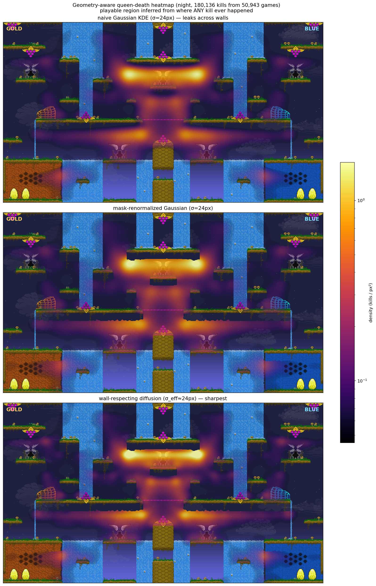
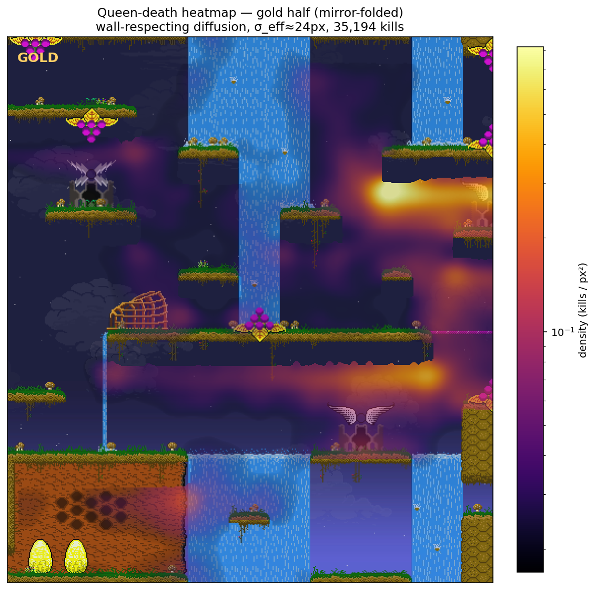
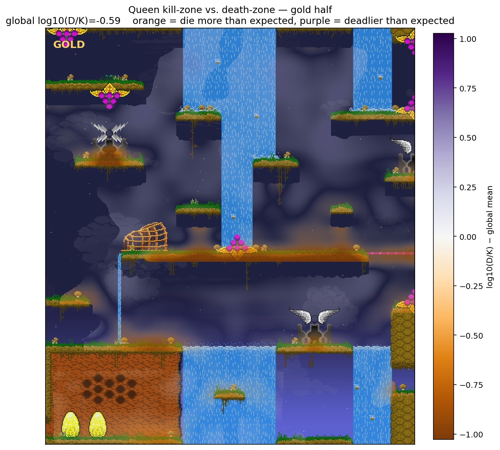
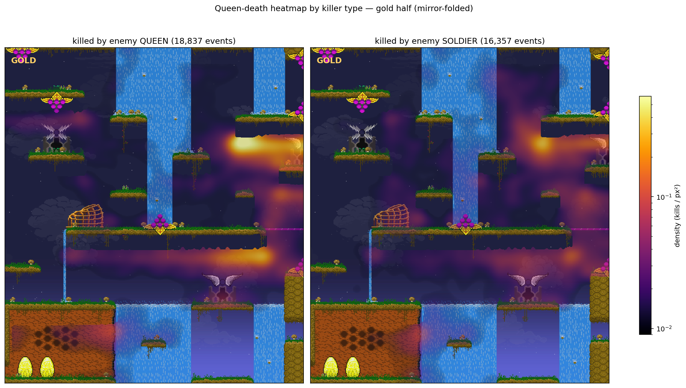
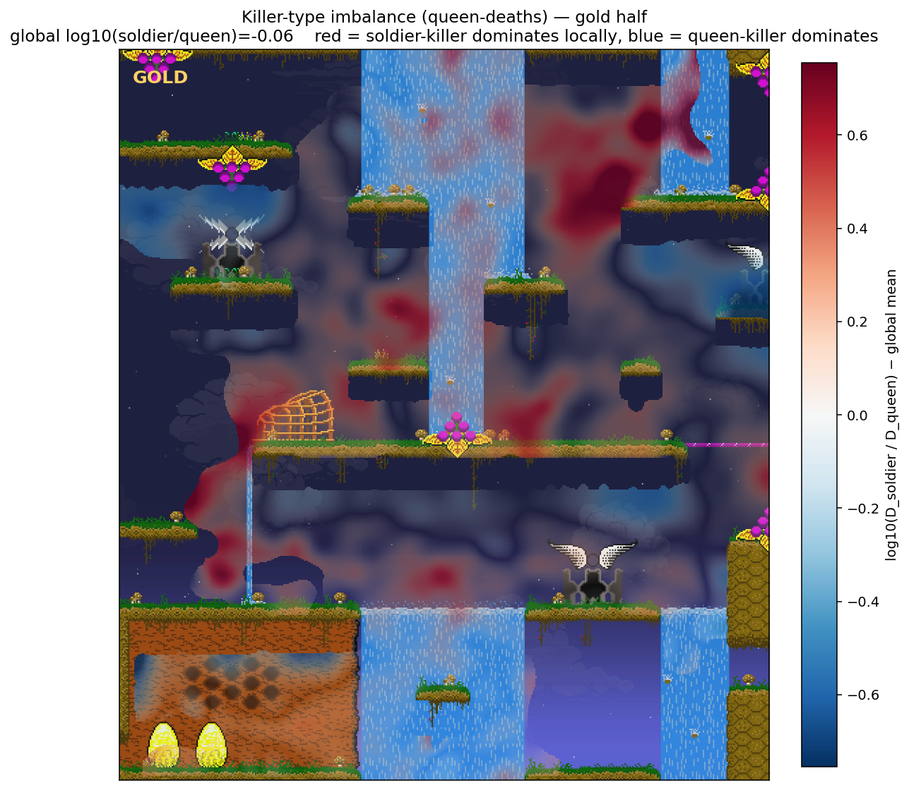
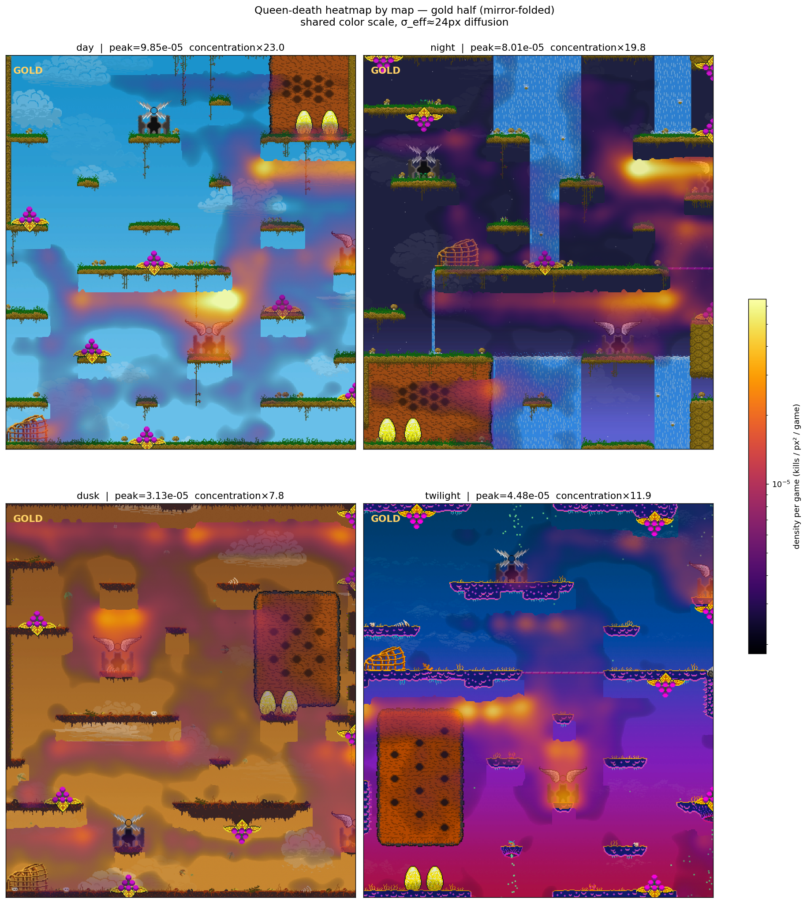
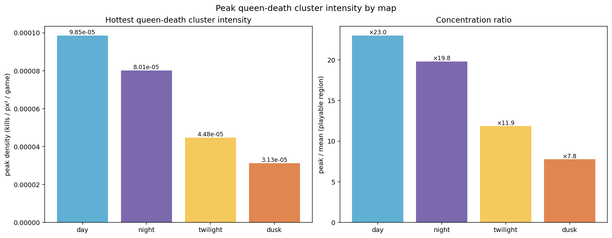

Inputs, transformations, and outputs. Each figure’s caption states only what was computed.
For each game in the quality-filtered set we walk the
playerKill events and keep
(killer_x, killer_y, killer_pid, killed_pid, killed_category)
plus the game’s map index, quality rank, and
gold_on_left flag. Positions are mirrored to a
canonical gold-on-left frame; y is flipped from Cartesian
(game) to pixel coordinates so it matches the screenshot.
Every quality-filtered game is included — 182,447 games in
total (49,147 day, 50,943 night, 47,427 dusk, 34,891 twilight),
6,096,016 kill events, 650,988 of them queen deaths. Where applicable,
both sides of a map are mirror-folded onto the gold half via
x' = min(x, 1920 - x), doubling effective sample density
in the visible area.
For a 2D point set on a 1920×1080 canvas the standard estimator is a Gaussian kernel density. With the bandwidths that surface map-feature structure (~24 px) a Gaussian KDE has a problem specific to this domain: it spreads density isotropically, including across solid map geometry. A queen kill near a platform edge contributes weight to cells inside the stone below it, and a kill in one chamber spills across thin walls into adjacent chambers.
Three estimators were compared:
density = gaussian(H, σ). Closed-form, fast, ignores geometry.num = gaussian(H·M, σ) and
den = gaussian(M, σ), then
density = num / den on M. Corrects the boundary
dilution that pulls naive density down near edges, but the kernel still
reaches across thin walls.f ← (1 - α)·f + α·mean(playable neighbours of f)
with α=0.2. Cells outside M are treated as no-flux
boundaries, so density never crosses solid geometry. Variance after
T iterations is approximately
σ² ≈ α·T cells² per
axis, so the iteration count is set to match a 24-px target
bandwidth.
The trade-off:
gaussian_filter call. Mask-renormalized: two. Diffusion:
O(σ²/α) ≈ 180 sparse stencil applications.All overlays use a power-curve alpha,
alpha = 0.92 · progress^0.55 with
progress = norm(density) clipped to [0,1] and zero where
the cell density is zero, so low-density cells let the underlying map
sprite show through and high-density cells render opaque.

For each cell, two diffusion-smoothed densities:
D = density of queen-deaths (rows where
killed_cat == "Queen"; 180,136 events);
K = density of kills by queens
(rows where killer_pid ∈ {1, 2}; 701,574 events).
Plot log₁₀(D/K) minus the global value
log₁₀(ΣD / ΣK). Cells with low
combined signal (D+K below the 20th percentile of the
playable region) are masked out.

log₁₀(D/K) − global; alpha
proportional to |deviation| / vlim so cells matching the
map average are transparent.Queen-death rows partitioned by killer:
killer_pid ∈ {1, 2} → killer is the enemy queen;
killer_pid ≥ 3 → killer is a worker, which must be
a winged soldier to have killed the queen. In the full night dataset,
53.7% are by enemy queen (96,739 events) and 46.3% by enemy soldier
(83,397 events).

The two densities recombined as a balance map:
log₁₀(Dₛₒₗₙᵢₑₐ / Dₑᴴᴴᴱₑₙ)
minus its global value
log₁₀(ΣDₛₒₗ / ΣDₑᴴᴴᴱₑₙ) = −0.06:

|deviation| / vlim.Same diffusion estimator (σ=24 px), same fold, run on each map independently with a per-map empirical mask. Densities are divided by the number of games sampled in that map so peaks are comparable across maps.
| map | games | queen deaths | deaths / game | peak density (kills/px²/game) |
concentration (peak ÷ playable mean) |
|---|---|---|---|---|---|
| day | 49,147 | 182,010 | 3.70 | 1.02e−4 | ×23.4 |
| night | 50,943 | 180,136 | 3.54 | 9.16e−5 | ×22.1 |
| twilight | 34,891 | 116,224 | 3.33 | 4.37e−5 | ×11.4 |
| dusk | 47,427 | 172,618 | 3.64 | 4.21e−5 | ×9.9 |


Each game is assigned a per-game scalar attribute and the night-map sample is partitioned into 12 equal-mass buckets by quantile. The densities from §3 are recomputed for each bucket and rendered as one frame, producing a 12-frame mp4 per plot type. Frame interval 0.5 s.
Bucket attribute: the game’s quality-classifier rank in
quality_filtered/encoded/all_games.bin (the bin is sorted
by quality_score descending, so each game has a unique
rank). Bucket label gives the percentile range; bucket 0–8% is
the highest-quality games. Each bucket holds ~4,245 night games.
Bucket attribute: the average pre-game OpenSkill PlackettLuce
μ of the two queens in the game. Ratings come from
compute_ratings.py, which walks
unfiltered_partitioned/usergame.csv chronologically and
records the pre-game per-position μ snapshot before each
game updates the model. Games with no rating record are dropped,
leaving 30,222 night games. Each bucket holds ~2,518 games.